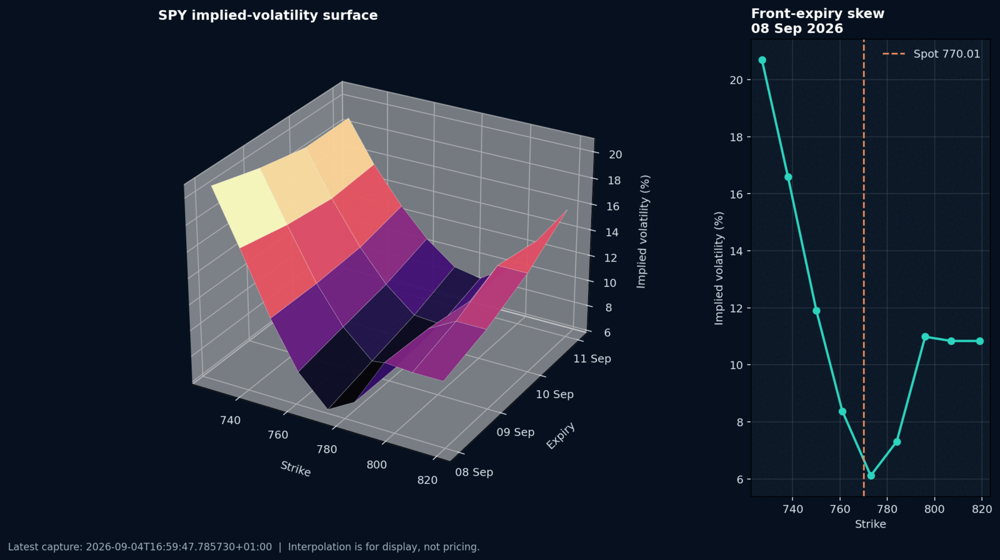

Resolve
Confirm the SPY contract and capture the live underlying price.
US options · live market data · Python
A complete market data application: resolve the option chain, request model implied volatility, capture timestamped snapshots and recreate the surface offline.
The build
The application connects to a locally running Interactive Brokers Trader Workstation or Gateway session. It first resolves the SPY contract and retrieves the option chain that IBKR labels SMART. SMART is IBKR's aggregated routing destination, allowing an eligible option contract to be routed across supported exchanges instead of tying it to one venue.
From that chain, the program selects the next four expiries and up to nine strikes between 94% and 106% of the current SPY price. This creates a manageable grid centred near spot rather than requesting every listed contract. It uses puts below spot and calls at or above spot to focus on the out of the money side of the smile.
IBKR returns contract details and model implied volatility through callbacks as each response becomes available. Request IDs link every observation back to its expiry, strike and option type, while completion events allow unavailable contracts to be skipped without blocking the rest of the grid.

Data flow
Interactive Brokers returns contract details and market data through separate callbacks. The application stores contract metadata, request IDs and observations separately, then joins them into the surface.
Confirm the SPY contract and capture the live underlying price.
Choose short expiries and a compact strike range around spot.
Map option computation callbacks to expiry, strike and right.
Write timestamped observations, then render the saved grid offline.
The sample shows a pronounced short dated smile with higher implied volatility away from spot. The chart is useful for inspecting shape and data coverage, not for pricing or relative value trading.
Timeouts, contract resolution events, data mode reporting and a saved snapshot fallback make failure states visible and keep the desktop display from being the only record of the result.
What the project demonstrates
Limits
This is a visual research tool, not a fully calibrated pricing surface. It uses strike rather than forward moneyness, does not fit a parametric model, and does not explicitly adjust for rates or dividends. The saved example is short dated and sparse; edge values are interpolated where the final strike is unavailable for an expiry.
Run requirements